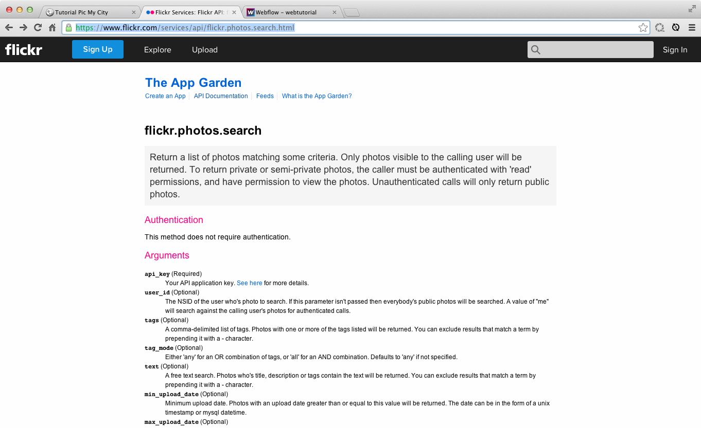
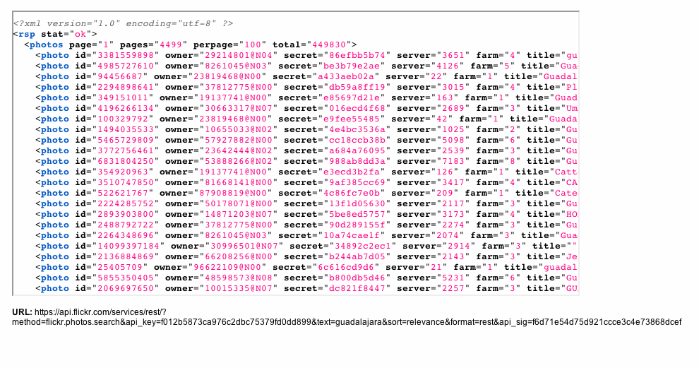
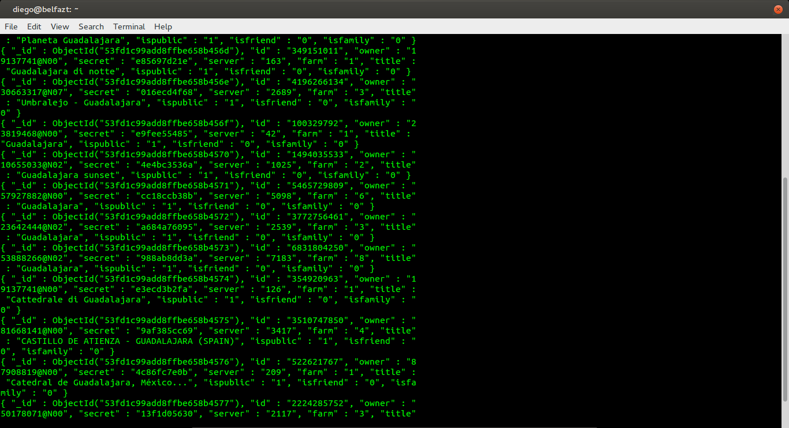

Antes de comenzar:
Paso 1. Buscar el feed de nuestro servicio  https://www.flickr.com/services/api/flickr.photos.search.html
Paso 2. Hacer la busqueda del codigo XML con el criterio de busqueda: Guadalajara y relevancia  https://api.flickr.com/services/rest/?method=flickr.photos.search&api_key=d31b0fb59fcc91253ca0898627743553&text=guadalajara&sort=relevance&format=rest
Paso 3. Convertir el XML a JSON usando funciones de PHP
$xml = simplexml_load_string($output);
$json = json_encode($xml);
Paso 4. Cargar el JSON directamente del servicio
$.ajax({
url: "api.php",
dataType: "json",
success: function(response) {
// renderizar response
}
});
Paso 5. Insertar el JSON en MongoDB  Usamos el siguiente codigo para ingresar los datos a mongo:
$m = new MongoClient();
$db = $m->jsonAPI;
$collection = $db->flickr;
$doc = json_decode($json,true);
$doc = $doc ["photos"]["photo"];
foreach ($doc as $item) {
$collection->insert($item["@attributes"]);
}